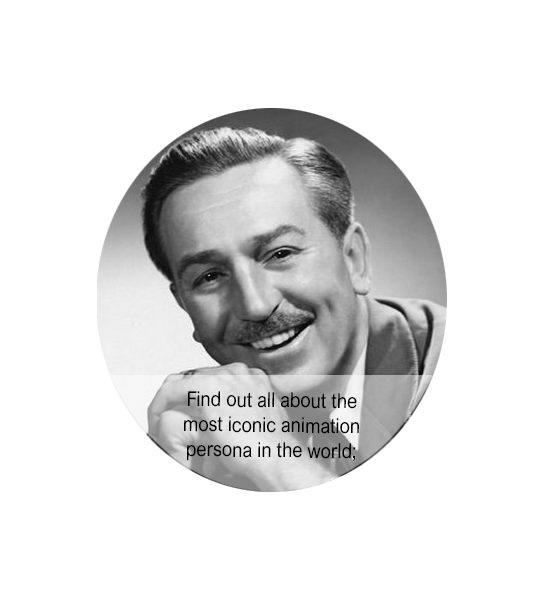
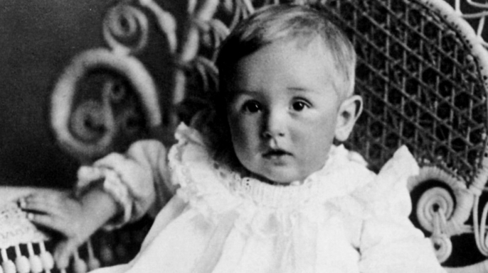
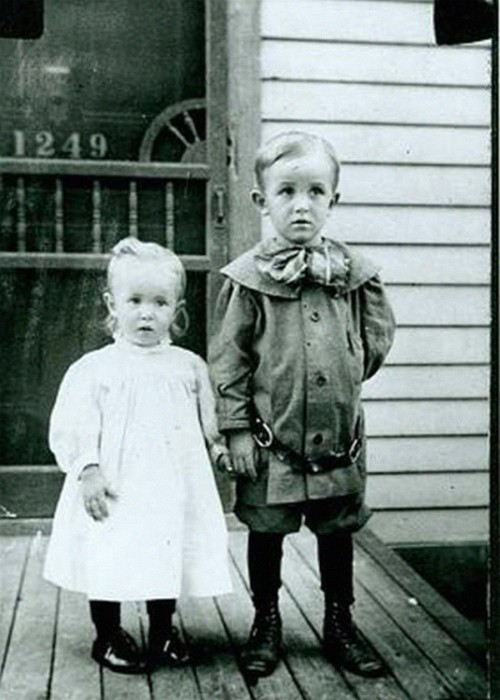
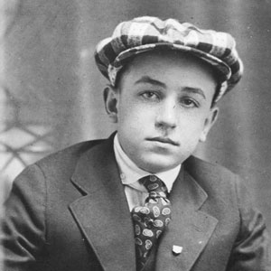
Born in Chicago in 1901,
Disney developed an
early interest in drawing.
He took art classes
as a boy and got a job
as a commercial illustrator
at the age of 18.
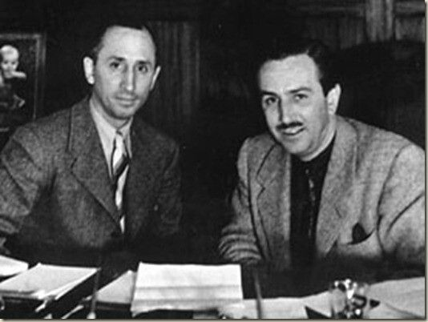
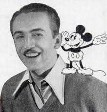
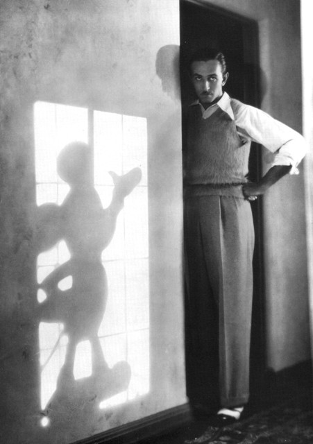
He moved to California in the early 1920s and set up the Disney Brothers Studio with his brother Roy.
Walt and Roy Disney establish The Disney Brothers Studio in 1923.
With Ub Iwerks, Walt developed the character Mickey Mouse in 1928, his first sucess;
He also provided the voice for his creation in the early years.
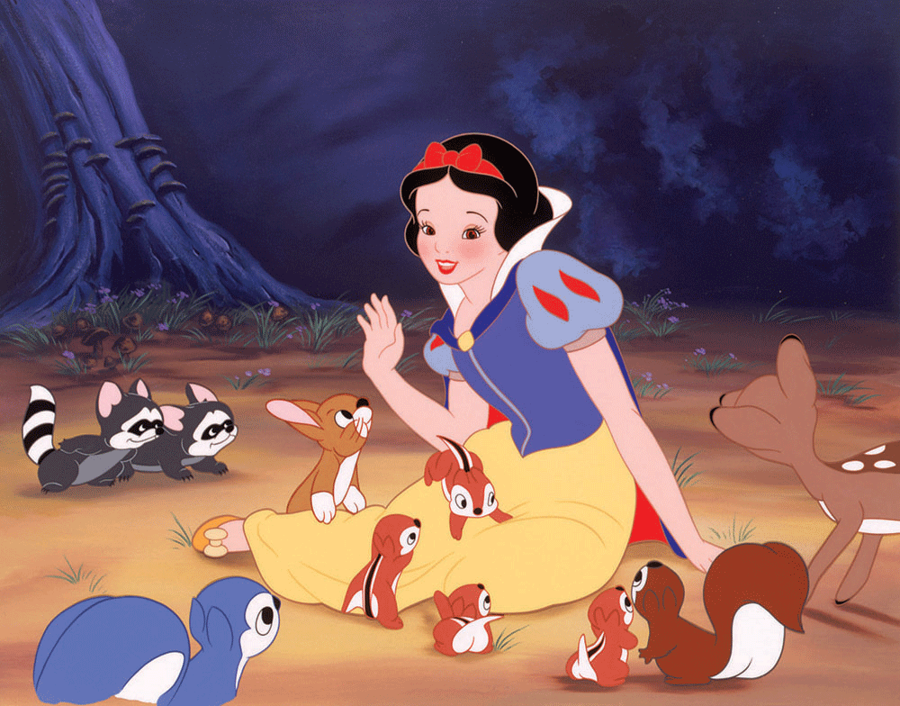
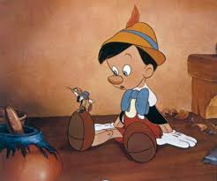
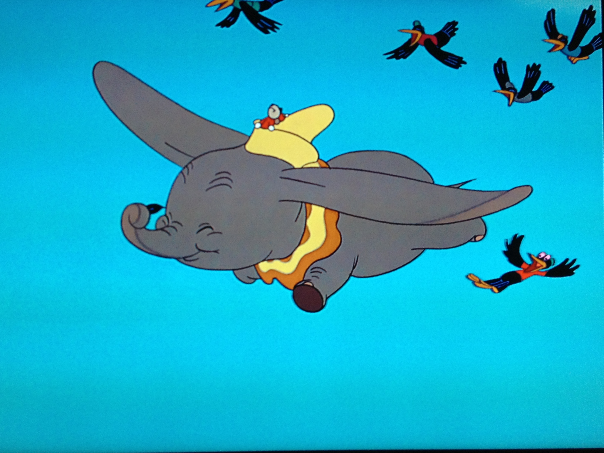
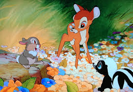
As the studio grew, Disney became more adventurous technology wise
The results, seen in features such as:
Snow White and the Seven Dwarfs (1937);
Pinocchio (1940);
Dumbo (1941);
Bambi (1942);
furthered the development of animated film.
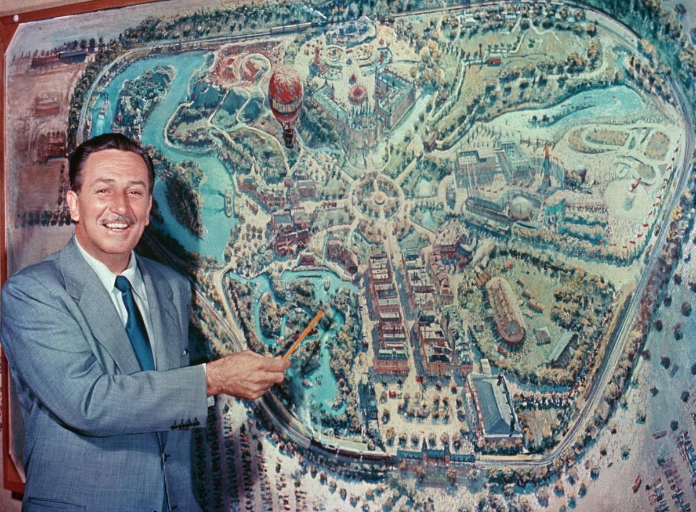
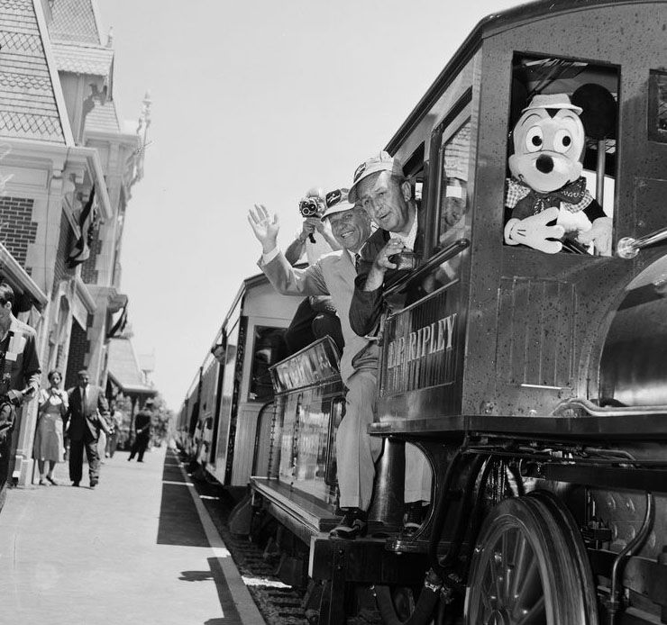
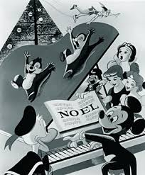
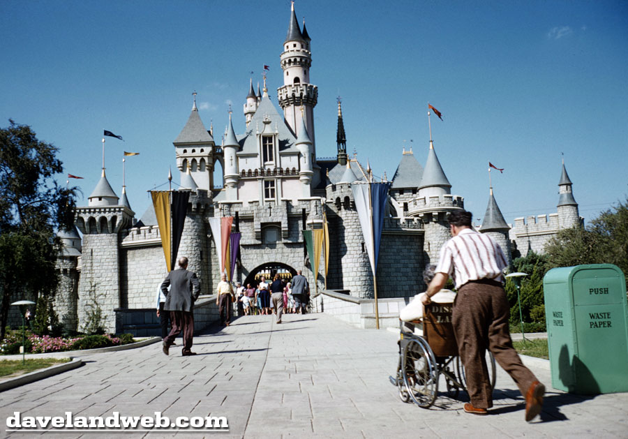
To fund the project he diversified into television programs, such as Walt Disney's Disneyland and The Mickey Mouse Club;
image to the left:
Disney First Christmas Special;
Disney Christmas Show
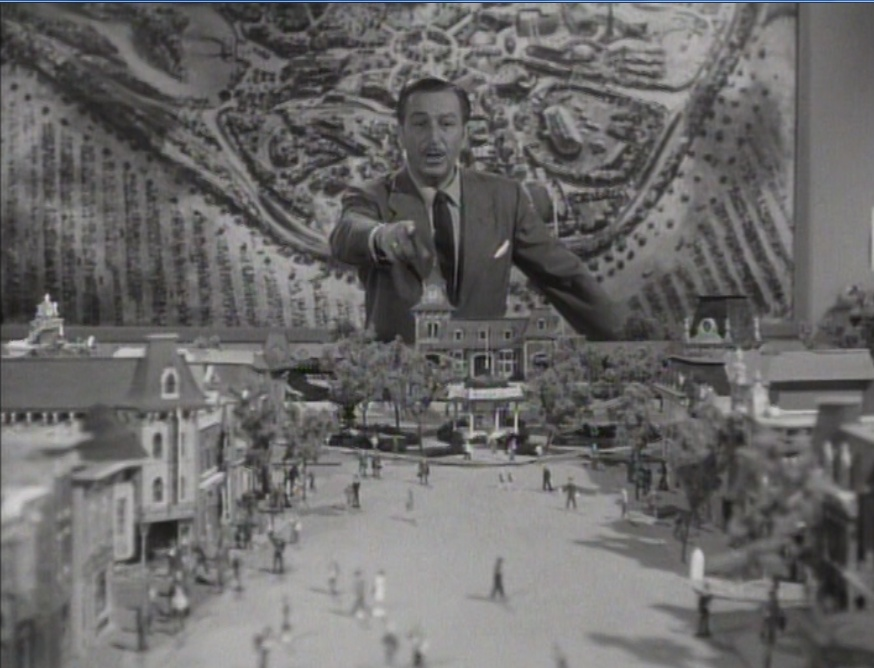
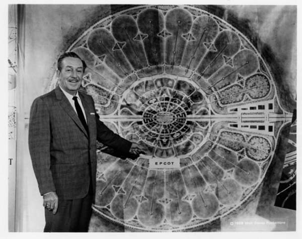
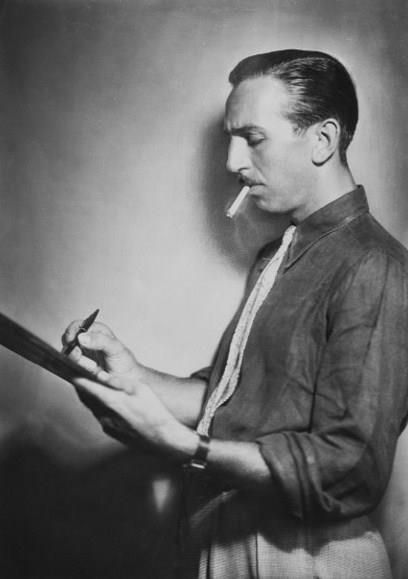
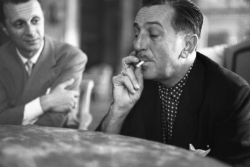
In the 1950s, Disney expanded into the amusement park industry, and in 1955 he opened Disneyland. To fund the project he diversified into television programs, such as Walt Disney's Disneyland and The Mickey Mouse Club;
image to the left: Disney First Christmas Special Disney Christmas Show